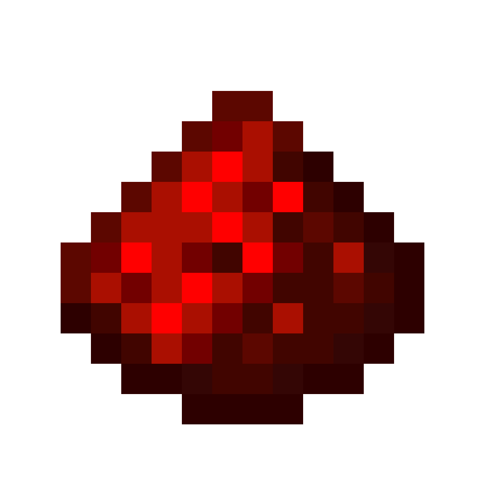

VIEWTEA · 观茶境
一叶见山 · 一盅忘尘


***************************************************************************************************************************************************************************************************************
欢迎来到 [VIEWTEA·观茶境]
🎮 服务器特色
✔ 纯净生存 | 粘液科技 | 空岛战争 | 宠物养成
✔ 稳定开服 24x7 | 防作弊系统 | 定期活动
✔ 友好社区 | 新手礼包 | 自由交易
📜 加入方式
Java版IP： viewtea.top
基岩版端口： 尚不支持
QQ群： 810373205
🌟 最新公告
🔥 520以至，爱意不止情侣，欢喜送给全员——服务器专属cdk已派送，愿大家自在游玩，万事舒心 ————> CDK：520
📢 每周六晚8点在线抽奖，OP在线发放福利~

规则守则禁止作弊、恶意破坏、偷窃他人财物 | 和谐交流，尊重他人
遇到问题请联系管理 | 祝你游戏愉快！